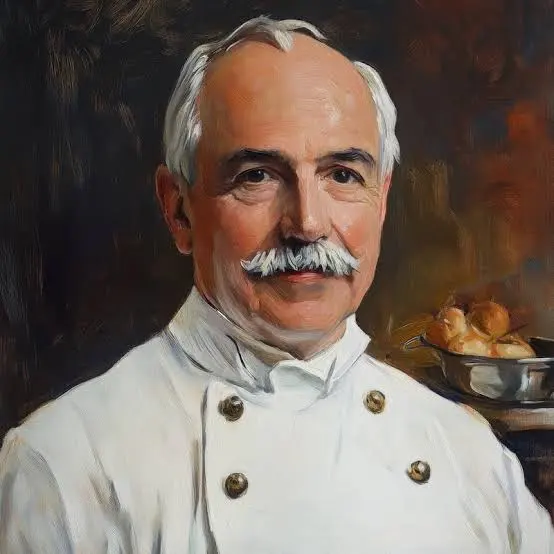

Somos Fusion Gourmet, una empresa francesa fundada en 1890 por el legendario Auguste Escoffier, el padre de la cocina moderna y maestro de chefs que revolucionó la gastronomía con su precisión, innovación y énfasis en la armonía de sabores. Inspirados en su visión de fusionar técnicas clásicas con influencias globales, hemos evolucionado para crear experiencias culinarias únicas que celebran la diversidad cultural a través de la comida. Actualmente, nuestra CEO es Dayan Escoffier, bisnieta del gran maestro, una visionaria apasionada que ha modernizado el legado familiar incorporando sostenibilidad, ingredientes locales de temporada y fusiones audaces entre la tradición francesa y cocinas del mundo, como el maridaje de escabeche provenzal con especias asiáticas o postres inspirados en el Mediterráneo con toques latinoamericanos.

Cada año, Fusion Gourmet organiza el prestigioso Festival Gastronómico Escoffier en el corazón de París, un evento anual que atrae a miles de gourmets, chefs estrella Michelin y foodies internacionales durante tres días de puro deleite sensorial. Este festival no es solo una celebración de sabores, sino un escaparate de innovación donde talleres interactivos, catas exclusivas, competiciones de fusión y cenas maridadas con vinos de Burdeos y champagnes de élite reúnen lo mejor de la alta cocina. Bajo el liderazgo de Dayan, el festival promueve causas como la reducción del desperdicio alimentario y el apoyo a productores artesanales, consolidando a Fusion Gourmet como un pilar de la gastronomía contemporánea que une pasado y futuro en cada bocado.

Somos Fusion Gourmet, una empresa francesa fundada por el legendario Auguste Escoffier. Actualmente, nuestra CEO es su bisnieta, Dayan Escoffier, quien continúa con su legado de excelencia culinaria.